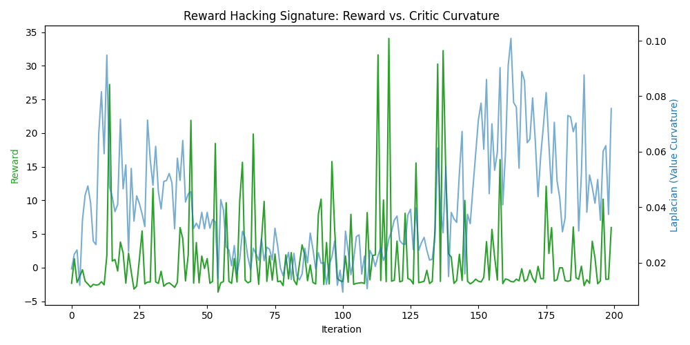
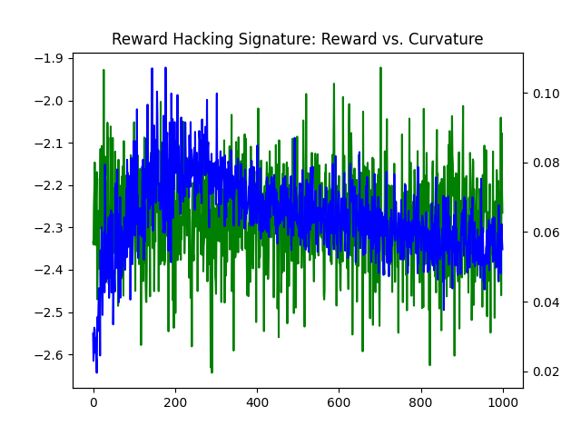

Modeling Reinforcement Learning Trajectories as Stochastic Differential Equations
By Jai Sharma, Rithwik Nukala, Christopher Sun, Kourosh Salahi · February 14, 2026
This work models the trajectory of a Reinforcement Learning agent through state space as a Stochastic Differential Equation (SDE). We demonstrate how the diffusion term in the Hamilton-Jacobi-Bellman equation serves as an effective detector of reward hacking, and show how incorporating the Laplacian of the value function into the training loss can offset these effects.
Project Overview
In Reinforcement Learning, agent trajectories contain both deterministic and stochastic components. The agent uses the value function to navigate the environment (signal), while the environment and policy introduce non-deterministic elements (noise). By modeling this as an SDE, we gain deeper insights into agent behavior and can detect problematic patterns like reward hacking.
1. Modeling the Agent's Trajectory
The State SDE
We model the agent's trajectory through state space as a Stochastic Differential Equation:
Where:
- $X_t$: The state at time $t$
- $u_t$: The action taken at time $t$
- $f(X_t, u_t)$: The drift term, representing deterministic dynamics based on state and action
- $\sigma(X_t, u_t)$: The diffusion term, capturing environmental stochasticity
- $dW_t$: A Wiener process (Brownian motion) representing random fluctuations
The Value Function
At time $t$, the agent aims to maximize the present value of rewards from time $t$ to the horizon $H = \infty$:
Where:
- $\rho$: The discount rate determining how quickly future rewards decay
- $e^{-\rho(s-t)}$: The discount factor for finding present value of future rewards
- $r(X_s, u_s)$: The reward function for state-action pairs
2. Deriving the Hamilton-Jacobi-Bellman Equation
Step 1: Taylor Expansion
We begin with a Taylor expansion of the value function with respect to time:
This states that the value of the current state equals the immediate reward over a small time interval, plus the discounted expected value of the next state.
Step 2: Applying Itô's Lemma
Itô's Lemma allows us to express the differential of the value function:
When taking expectations, the stochastic term ($dW$) vanishes, leaving only the deterministic drift.
Step 3: Substitution and Simplification
Plugging the Itô expansion into the Taylor approximation and using $e^{-\rho\Delta t} \approx 1 - \rho\Delta t$ for small $\Delta t$:
Canceling $V(x, t)$ from both sides and dividing by $\Delta t$:
Step 4: The HJB Equation
Rearranging, we obtain the Hamilton-Jacobi-Bellman equation:
This fundamental equation decomposes the value into:
- Immediate reward: $r(x, u)$
- Drift contribution: How the deterministic dynamics affect value
- Diffusion contribution: How stochasticity affects value
3. Interpreting the Time Derivative
The left-hand side of the HJB equation has an important interpretation. Consider that the discounted value is:
Taking the time derivative:
Therefore:
4. Detecting Reward Hacking via the Diffusion Term
In this project, we focus on the diffusion term as a signal for detecting reward hacking:
What is Reward Hacking?
In Reinforcement Learning environments, reward hacking occurs when an agent finds loopholes to exploit that yield high rewards but are unsustainable. These exploits are characterized by:
- Little genuine signal in terms of improving the value function
- The agent spending most effort offsetting random environmental fluctuations
- High sensitivity to stochastic perturbations (large diffusion term)
- Rewards that depend on maintaining a precarious position rather than robust policy
The Laplacian as a Detector
The second derivative $\frac{\partial^2 V}{\partial x^2}$ (the Laplacian in higher dimensions) measures the curvature of the value function. High curvature indicates:
- The value function is highly sensitive to small perturbations in state
- The agent must work hard to maintain its position against noise
- The reward is not robust to environmental stochasticity
5. Project Contributions
This research demonstrates three key contributions to understanding and mitigating reward hacking in RL:
Contribution 1: Laplacian-based Detection
The Laplacian of the value function with respect to the state is an effective detector of reward hacking.
By computing $\nabla^2 V$ during training or evaluation, we can identify when an agent is exploiting fragile reward structures. High Laplacian values indicate the agent is fighting against environmental noise rather than learning robust policies.
Contribution 2: Regularization via Laplacian
We can offset the effects of reward hacking by adding a weighted Laplacian term to the training loss function.
By incorporating a penalty term proportional to $\|\nabla^2 V\|^2$ in the loss, we encourage the learned value function to be smoother and more robust to stochastic perturbations. This guides the agent away from fragile exploits.
Modified Training Objective
The regularized training loss becomes:
Where $\lambda$ is a hyperparameter controlling the strength of the regularization. This penalizes high curvature in the value function, encouraging the agent to find more stable, sustainable reward strategies.
Contribution 3: Theoretical Framework
Connection between SDE theory and RL provides new theoretical insights.
By modeling RL trajectories as SDEs and deriving the HJB equation, we establish a rigorous mathematical framework for understanding the interplay between deterministic policy improvement (drift) and robustness to uncertainty (diffusion).
Mathematical Summary
Key Equations
State SDE
Value Function
Hamilton-Jacobi-Bellman Equation
Regularized Training Loss
Conclusion
By modeling Reinforcement Learning trajectories as Stochastic Differential Equations, we gain powerful tools for understanding and mitigating reward hacking. The diffusion term in the HJB equation—specifically the Laplacian of the value function—serves as an effective detector of fragile reward exploits. Incorporating this insight into training through Laplacian regularization helps agents learn more robust, sustainable policies.
This work bridges theoretical insights from stochastic calculus with practical RL challenges, opening new avenues for creating more reliable and trustworthy learning systems.
Authors
Jai Sharma · Rithwik Nukala · Christopher Sun · Kourosh Salahi
February 14, 2026
Media & Demonstrations
Visual demonstrations of reward hacking behavior detected using the Laplacian-based approach.
Reward Hacking Detection Signatures
Visualization of the Laplacian signatures that indicate reward hacking behavior in RL agents.


Agent Behavior: Reward Hacking Episodes
Videos demonstrating agents exhibiting reward hacking behavior across multiple episodes. Notice the characteristic patterns of exploiting environmental loopholes rather than learning robust policies.